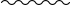
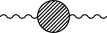
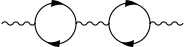
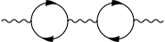
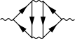

HEP3 - Why do photons not acquire a mass through quantum corrections/interaction with virtual particles? What is charge renormalization?
The short answer is that quantum corrections to the photon propagator do not give it a mass because of the Ward identity, which is a consequence of gauge invariance.
The probability amplitude for a photon to go from point A to point B is given by what is called the propagator. The "bare" propagator is given by the following expression:
 \(= \pi^{\mu\nu}(q) = \frac{-ig^{\mu\nu} }{q^2 + i\epsilon} \)
where \(q\) is the four-momentum of the photon and \(\epsilon\) is a funny thing you shouldn't worry about. In fact, put it to 0. This is how a massless propagator should look. The mass of the particle is given by where the propagator is singular (has a pole), so in this case \(q^2 = m^2 = 0\). (If the photon was massive, in the denominator we would have \(q^2-m_\gamma^2 + i \epsilon\)). The propagator has two Lorentz indices \(\mu\) and \(\nu\) because the photon has a polarization. To get the probability amplitude, you actually have to contract the indices of the propagator with your desired polarization \(\varepsilon_\mu\)
But this is just the bare propagator, this is all tree-level. We want to compute what happens to the propagator when we include higher-order corrections. More practically: the fact that a photon can produce a virtual electron-positron pair, which then reannihilate into a photon, as such:

should affect the probability of the photon going from point A to point B. In fact, when summing over all possible diagrams for the \(\gamma\rightarrow \gamma\) process:
\(\Pi(q) = \)  \(=\) \(+\) \(+\)  \(+\)  \(+ \ldots\)
\(+\)  \(+ \ldots\)
we should get the "dressed", or physical propagator \(\Pi^{\mu\nu}\). (A quick review of Feynman diagrams: time goes from left to right, wavy lines are photons, solid lines going right are electrons, left are positrons). Now we want to rearrange the terms of the previous series. Call a diagram one-particle-irreducible (1PI) if you cannot split it in two by cutting one of the internal lines (the two wavy lines at the beginning and end don't count). For example, the following diagrams are respectively 1PI and not 1PI.
,
Now consider the sum of all 1PI diagrams in the original series, and denote it as:
\(S = \) 
My claim is that the full series of all diagrams for the photon propagator is equal to:
\(=\) \(+\) \(+\)  \(+\)
\(+\)  \(+ \ldots\)
\(+ \ldots\)
This is actually really simple. Think about it.
So, remembering that concatenating Feynman diagrams means we have to multiply them, we get the geometric series:
\[ \Pi = \pi + \pi S \pi + \pi S \pi S \pi + \pi S \pi S \pi S \pi + \ldots = \pi\left( 1 + S\pi + (S\pi)^2 + (S\pi)^3 + \ldots \right) \]
except these are matrices (with \(\mu\) and \(\nu\) indices), so we have to fix that before summing the geometric series. Here we introduce the fundamental Ward identity. If you have any process in which a photon is one of the external lines (incoming or outgoing particles), then the probability amplitude \(\mathcal{M}\) satisfies
\[ \mathcal{M}^\mu q_\mu = 0\]
where \(q_\mu\) is the momentum of the photon.
Our 1PI propagator \(S^{\mu\nu}(q)\) should satisfy the Ward identity. It must therefore be proportional to the projector on the subspace orthogonal to \(q_\mu\). It's not hard to convince oneself that this is given by
\[ S^{\mu\nu}(q) = (q^2 g^{\mu\nu} - q^\mu q^\nu) \Phi(q^2) = \Delta^{\mu\nu}(q) \Phi(q^2) \]
Where \(\Phi(q^2)\) is some scalar function (we also have used that the propagator must be Lorentz-invariant). Since \(\Delta\) is a projector, \(\Delta^2 = \Delta\) (in the sense of matrices). Moreover, also the product \(\Delta' = \Delta \pi\) is a projector, as you can readily compute. We return to our series:
\[ \Pi(q) = \pi\left(1 + \Delta' \Phi + \Delta' \Phi^2 + \Delta' \Phi^3 + \ldots \right) = \pi + \pi\left(\Delta' \left( \frac{1}{1-\Phi(q)} - 1\right) \right) \]
So, finally
\[ \Pi^{\mu\nu}(q) = \frac{-i}{q^2(1-\Phi(q^2))} \left(g^{\mu\nu} - \frac{q^\mu q^\nu}{q^2}\right) + \frac{-i}{q^2} \left( \frac{q^\mu q^\nu}{q^2} \right) \]
Now, we can just drop all terms with \(q_\mu q_\nu\), because the Ward identity tells us they will not contribute to the scattering amplitude (the Ward identity is just telling us that the longitudinal polarization of the photon is unphysical). Our final expression for the dressed propagator is
\[ \Pi^{\mu\nu} = \frac{ -i g^{\mu\nu} } {q^2 (1-\Phi(q^2)) } \]
which is identical to our original bare propagator \(\pi\), just multiplied by the function \((1-\Phi(q^2))^{-1}\). Remembering what we said about poles and masses, for the photon mass to be preserved we would need that this function does not cancel the pole at \(q^2 = 0\) of \(\pi\). The cancellation would need \(\Phi(q^2)\) to have itself a second-order pole at \(q^2 = 0\), but this would seem impossible. However, it is absolutely not obvious, and in fact it is false in 2 spacetime dimensions. In the Schwinger model, in 2D, \(\Phi(0)\) has a pole canceling \(q^2\) and the photon mass is shifted to a finite value.
But our world is luckily higher-dimensional and the photon is safe from mass renormalization.
However, the propagator still acquires a global multiplicative factor
\[ Z_3 := \frac{1}{1-\Pi(q^2)} \]
Since the photon propagator connects two interaction vertices, and these bring each a power of the fundamental charge \(e\), the quantum correction to the photon propagators is making the electromagnetic interaction stronger. In particular, for each photon line there are two vertices and one factor of \(Z_3\), so
\[ e^2 \rightarrow Z_3 e^2 \]
which basically mean we could understand this shift as \(e \rightarrow \sqrt{Z_3} e\). This is why the procedure we performed above is called charge renormalization. We just derived the well-known fact that the strength of the EM interaction depends on the four-momenta involved.
To derive exactly that \(\Phi\) has no unwanted pole and how exactly \(e(q^2)\) runs with energy we would need to compute \(\Phi\) explicitly (with some clever regularization, since it's divergent) and I don't want to do that. For that, refer to any good QFT/QED textbook.